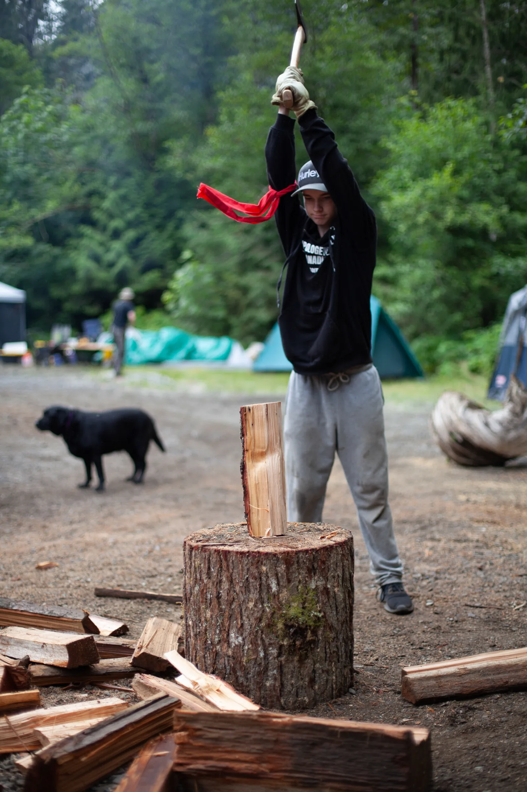

Why YMAW
No family should have to raise a young man entirely alone.
Raising a resilient, capable young man is a profound responsibility, and it was never meant to be done by two people. YMAW widens his circle: a weekend where he and his peers are challenged by a community of dedicated men, and where the values you are already building at home get reinforced by men who are not his parents.
The gap
Many of us never had the uncles, mentors or teachers who cared about our futures.
Since 1990 the men of YMAW have recognized a simple need: young men need to be initiated into adulthood by men who are not their parents. Many men on our team grew up without that. What some now call the boy crisis is, to us, an intergenerational loss that many of us carried ourselves.
So we show up. Once a year we build a weekend in the wilderness where a young man can take real risks, succeed or fail, and be witnessed either way by men who want him to win. He learns what he is capable of. He learns what he stands for. And he learns that there is a community of good men who value his particular gifts, and expect him to bring them.

"The child who is not embraced by the village will burn it down to feel its warmth."
African proverb, on the first page of every YMAW production handbookStraight talk
If you're the young man: this is not a lecture. It is a dare.
Nobody at YMAW needs you to be anything except honest. Nobody is going to fix you, because you are not broken. What you get is a series of real quests with a team, one night where you find out what you have been carrying and get to set some of it down, and a field of men who go first and have your back.
- You decide what you say and when. The men speak before you ever have to.
- You will be treated as a young man the whole way through, because that is what you are.
- You get tested by things that are actually hard, and you get to find out what you do when it is hard.
- A lot of the men running it were once the ones on the bus. They remember.
- You leave with a plan for your year that nobody wrote for you.
Purpose
What the weekend is for.
- To provide the leadership, community and environment for young men to discover themselves and test their limits
- To build a young man's confidence, the kind that survives contact with the world
- To create a safe space in which it is possible to be vulnerable
- To awaken the power within a young man that gives him the skill and understanding to overcome life's challenges
What he brings home
- He returns happier, more confident, and better prepared to face the challenges of his own life
- He finds an inner power that propels him to higher achievements
- He finds a community he can safely open up to and grow within, and a plan for the year ahead that he wrote himself
Values
Four words we hold each other to.
- Responsibility
- We are accountable for our roles and fulfil our duties to a high standard.
- Integrity
- Our thoughts, words and actions are in alignment.
- Community
- We are all members of many communities, and we uphold their values at all times.
- Self-discovery
- We push our limits, test our mettle, discover our potential, and strive to bring it into the world.

T.E.A.M.S.
The standards we coach to.
Standards are the minimum things that must come together for something to work and be what it claims to be. What a man consistently accepts, requires and lives is the measure of his standards, not what he says they are. Over the weekend the young men are coached to five:
- Truthful
- Honesty and integrity in all things. Facing reality with courage, admitting mistakes, doing what is right when it is difficult.
- Excellence
- Giving your best in everything, at all times, by taking intentional action. Getting out of your comfort zone and persisting.
- Accountable
- Taking full responsibility for yourself, your actions and even your thoughts. Owning it when you fall short, and making amends.
- Mindful
- Paying attention to your thoughts, feelings and surroundings with curiosity. Being in tune with yourself and the people around you.
- Service
- Putting the needs of others ahead of your own wants, without seeking attention or praise. Leading by example.
Who runs it
Volunteer men, since 1990.
YMAW is run by the Young Men's Adventure Weekend Society of BC, a volunteer society of men who plan the weekend for months, build the site, cook the meals, run the Quest Stations and hold the circles. No one is paid. Production men pay the same $320 as the young men.
Every man is screened. Every first-time staffer shadows a young man before he ever leads one. The team meets every other Thursday in Burnaby and by video on the off weeks, with men joining from Alberta to Washington State.
We hold ourselves to a code that reads, in part: commitment before ego. Keep your word. Be prepared. Champion diversity and recognize differences. Fight only honourable battles. Be an example to children.
Young men are watching. They learn more from what we do than from what we say. Read about the men, the roles and how to join on The Team.
Give him the weekend you wish you had.
September 11–13, 2026, Squamish region. $320 per person, everyone pays the same. Assistance available.